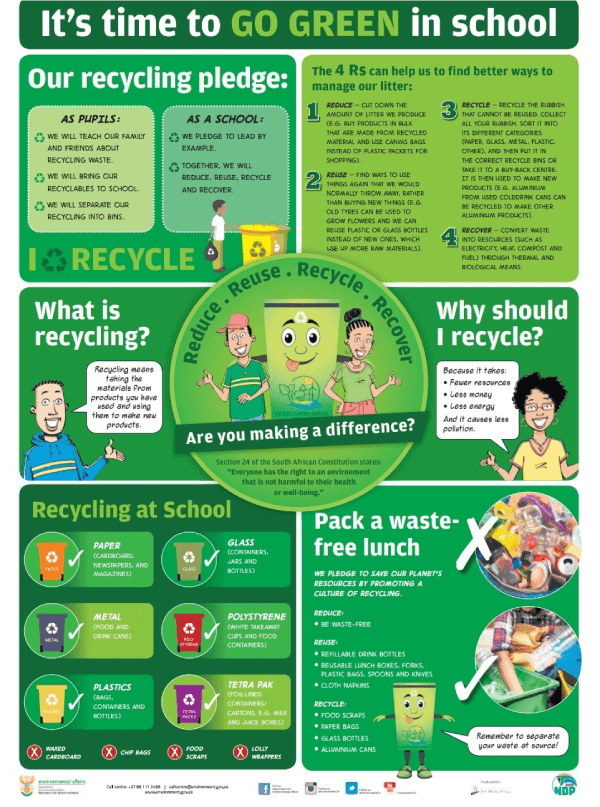
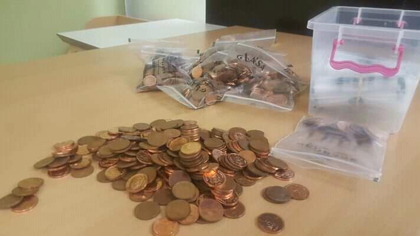

Green Schools

Green Schools Mission
Our mission is to improve the environmental management at schools, as well as environmental learning.
Meaning that groups consisting of teachers, leaners, community members, and or partner’s organisation
get together and undertake a project to improve some aspects of environmental management at their schools.
Ranging from saving electricity to starting a garden; the possibilities are endless! At the same time
teachers draw on these practical projects to strengthen environmental learning at the schools.
Re tlhabollo ya tikoloho.
Our future is our kids
Investing in their environmental education campaigns is
key to their survival skills..
Competition Categories
| Group Categories |
Prizes |
| 1 Best early child development Centre |
R25 000 worth of renovation |
| 2 Best clean school |
R25 000 worth of year supply of refuse bags installing of recycling bins & scale |
| 3 Best schools food security project |
R25 000 worth of an of erection of vegetable & gardening tools |
| 4 Best schools recycling project |
R25 000 worth of year supply refuse bags & installation of dedicated refuse bins |
| 5 Best school audio or visual |
R25 000 digital gadgets |
| 6 Best energy efficient school (Water, sanitation & electricity) |
R25 000 worth of installation of energy saving innovation |
| Individual Categories |
Prizes |
| 1 Best Art work by a leaner |
R2000 worth of material & art tools |
| 2 Best innovation |
R2000 worth of seed fund towards business development and
opportunity to innovation entrepreneur Centre TVET |

Entry to the competition 5 cents a child a day
Download Forms
Individual Application Form
Group Application Form